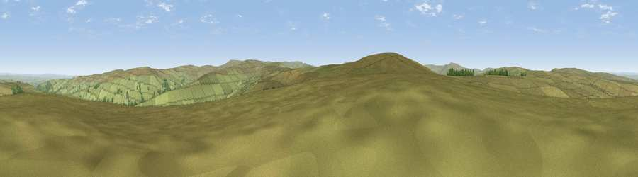

Viewpoint near Alston
#11914 in England · top 37% of its area beats it · near Alston · open accessWhere it is
The exact computed spot (NY 75825 50075). Click the marker for map links.
Public access: this spot lies on mapped open-access land (CRoW Act 2000) — you may roam here on foot. Computed from Natural England's CRoW access layer and OpenStreetMap rights of way — not the legal definitive map. Always verify locally.
The view, rendered

A 360° render of this exact spot computed from the terrain model, tree cover and land cover — summer colours, afternoon light, calibrated against photographs of famous viewpoints. Real trees, hedges and buildings will differ in detail.
The panorama
Grey silhouette: terrain skyline in each direction (720 bearings, Earth curvature and refraction included). Dashed green: skyline with trees (+15 m) and buildings (+8 m) as obstacles. Blue strip: how far the ground is visible on each bearing.
Where the view opens
Wedge length = distance to the farthest visible ground on that bearing (vegetation-aware). Rings at 10, 25 and 50 km.
What fills the view
98% grassland · 2% woodland
Angular shares of the visible panorama (visual magnitude), not map area. Landscape diversity 0.05 (0–1 Shannon).
Key numbers
More beautiful places nearby
The staircase of upgrades: each row has a higher view potential than everything closer. Driving times are estimates from straight-line distance, calibrated against real road routing — check an actual route before setting out.
| Place | Direction | Drive | Score |
|---|---|---|---|
| Hard Rigg | SSW · 2 km | ~4 min | 67.6 |
| Viewpoint c11015_7601 | E · 4 km | ~10 min | 68.2 |
| Viewpoint near Slaggyford | NW · 5 km | ~11 min | 70.0 |
| Viewpoint near Nenthead | S · 7 km | ~15 min | 71.4 |
| Viewpoint near Allenheads | SE · 8 km | ~16 min | 74.6 |
| Grey Nag | WSW · 10 km | ~19 min | 75.7 |
| Viewpoint near Renwick | WSW · 13 km | ~23 min | 77.0 |
| Viewpoint near Melmerby | SW · 16 km | ~28 min | 78.1 |
54.84490, -2.37799 · source: screening · position refined by local search. Computed location — check access rights before visiting.